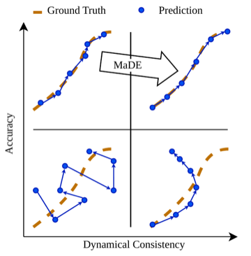
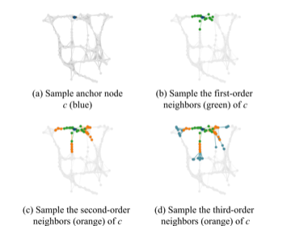
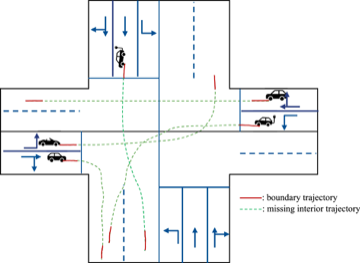
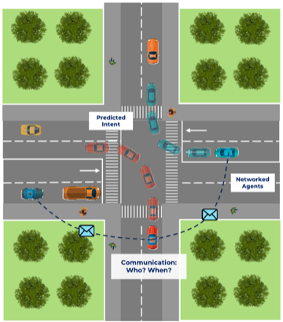
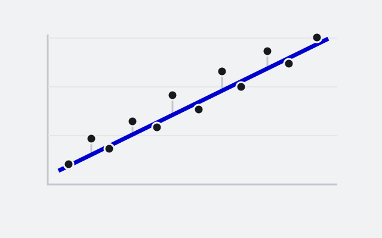

Markovian Dynamics Enforcer: Feasibility Preserving Correction on Learned Dynamics Manifolds
40th Conference on Neural Information Processing Systems (NeurIPS 2026), 2026 (accepted)
I am a PhD student at the Transport Systems & Logistics Laboratory, Department of Civil and Environmental Engineering, Imperial College London, supervised by Prof Panagiotis Angeloudis. I am also a member of the Imperial–TUM Joint Academy of Doctoral Studies, co-supervised by Prof Constantinos Antoniou at the Technical University of Munich. Previously, I completed my MSc and BEng at the University of Edinburgh, where I worked with Dr Lars Schewe and Dr David García Cava.
My research lies at the intersection of machine learning, optimisation, and intelligent transport systems. I develop methods based on physics-informed machine learning and neural operators that enforce physical feasibility and consistency in learning-based systems, with applications in trajectory reconstruction, trajectory prediction, and communication-based multi-agent reinforcement learning (MARL) for autonomous driving.
Email / GitHub / LinkedIn / Lab profile




